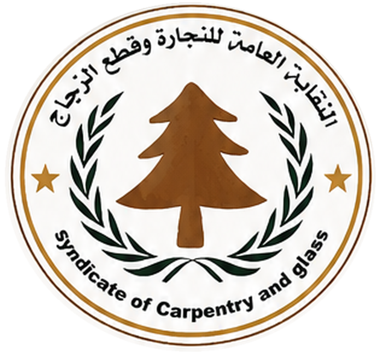

النقابة العامة
للنجارة وقطع الزجاج
دولة ليبيا
نبذة عن النقابة
تنشأ في مدينة بنغازي نقابة تسمى النقابة العامة للنجارة وقطع الزجاج، وتكون لها الشخصية الاعتبارية والذمة المالية المستقلة، مقرها الرئيسي مدينة بنغازي، ويجوز أن تنشأ لها فروع داخل ليبيا بقرار من المؤتمر العام للنقابة.
أهداف النقابة
تعمل النقابة على تحقيق الأهداف التالية:
حماية مصالح أعضائها والدفاع عن حقوقهم الحرفية والصناعية.
رفع الكفاءة الحرفية للأعضاء والارتقاء بمستواهم الفني والثقافي، وذلك عن طريق التدريب بمراكز التدريب والتقنيات ذات العلاقة.
العمل على إدخال الميكنة الحديثة المتطورة في مجال النجارة وقطع الزجاج وصناعة قوارب الصيد.
العمل على تحسين أداء الخدمات وتنمية روح الابتكار وتشجيع المنافسة بين الأعضاء وتطوير الإنتاج وزيادته تحقيقاً لخطة التنمية الاقتصادية والاجتماعية في دولة ليبيا.
رفع المستوى الصحي والاجتماعي للأعضاء وأسرهم.
عقد الدورات التدريبية النقابية وإصدار النشرات والمطبوعات بما يكفل تكوين قاعدة نقابية مدربة ومؤهلة وفاعلة.
المشاركة مع الجهات المختصة في وضع مشروعات القوانين والقرارات ذات العلاقة بالعمل في الحرفة.
تطوير العلاقة بالمنظمات النقابية وعقد المؤتمرات والندوات وورش العمل المحلية والدولية، والمشاركة فيها.
العمل على تأسيس صندوق تكافل اجتماعي لأعضاء النقابة بخصوص الكوارث وإصابات العمل.
توفير احتياجات الورش والوحدات الصناعية من الأخشاب بمختلف أنواعها الخام منها والمصنعة ومستلزمات التشغيل ومكملاتها وبأسعار مناسبة.
توفير الآلات والمعدات اللازمة لتشغيل الورش والوحدات الصناعية العاملة في مجال النجارة وقطع الزجاج.
تزويد الورش والوحدات الصناعية بإرشادات الأمن وشهادات السلامة المهنية والصحية.
مساعدة المنتسبين لها في الحصول على القروض المناسبة من المصارف التجارية وكافة المصارف المتاحة للقروض والتسهيلات المصرفية بقصد توفير آلات ومعدات النجارة.
العمل على استحداث مناطق صناعية بالتنسيق مع وزارة الصناعة والجهات ذات العلاقة.
اقتراح نماذج لمشروعات وورش النجارة والوحدات المساعدة.
السعي لإبرام عقود تنفيذ أعمال نجارة مع الجهات العامة والخاصة باسم النقابة والعمل على توزيعها على الورش والوحدات الصناعية في مجال النجارة وقطع الزجاج ومكملاتها.
تواصل معنا
للتواصل والاستفسارات يمكن استخدام البيانات التالية.